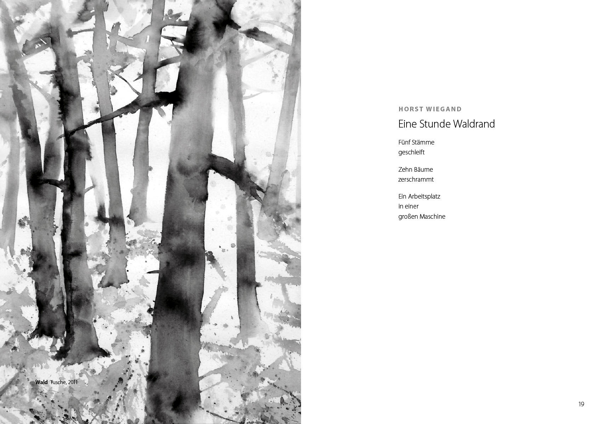
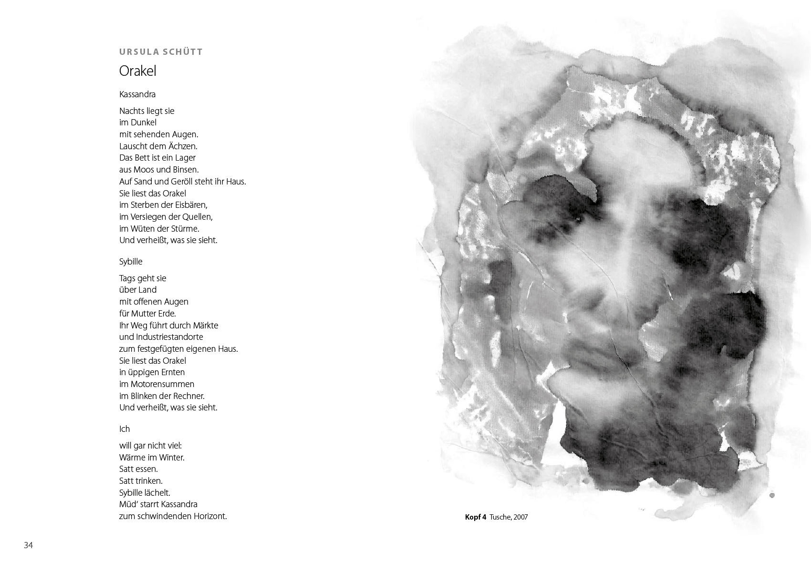
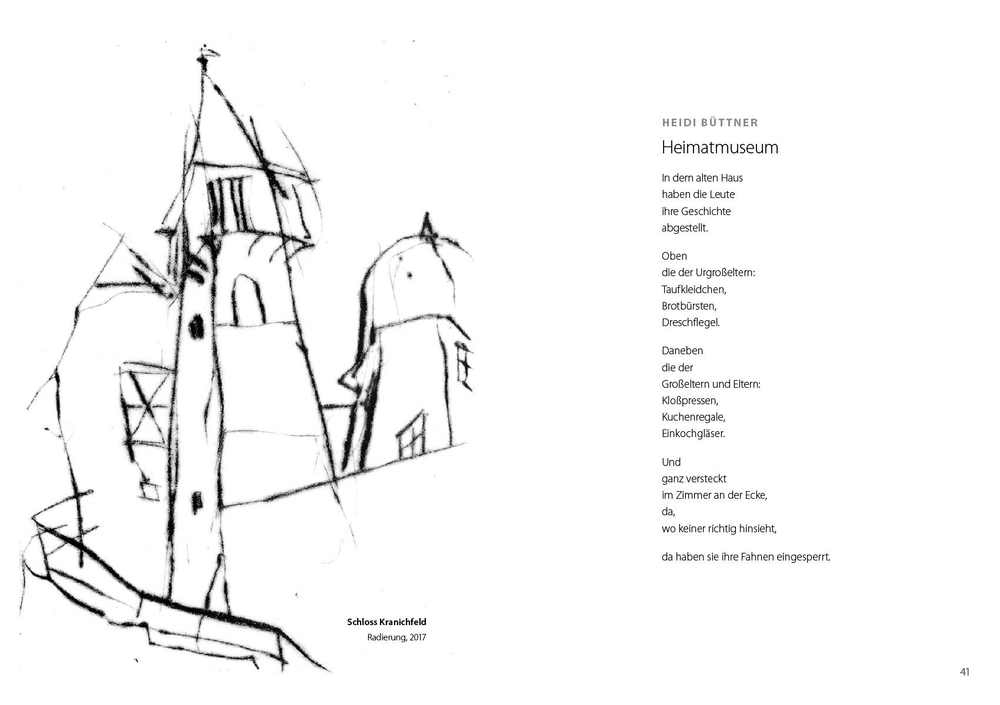
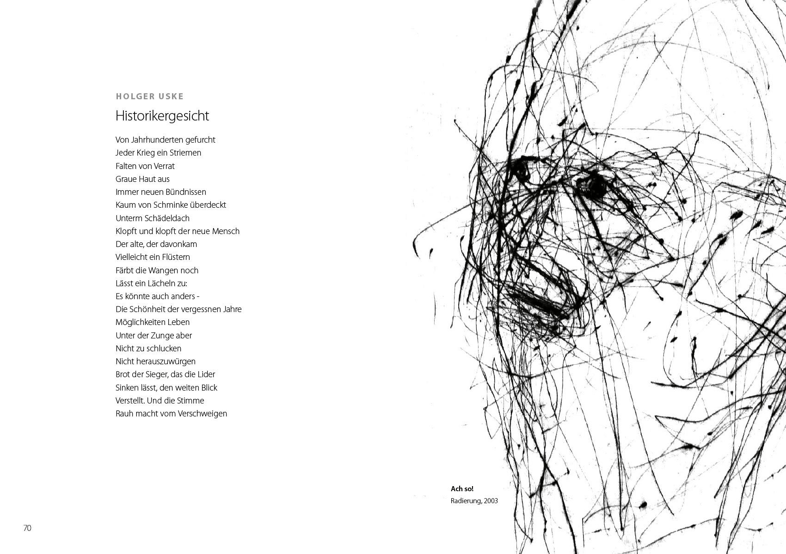

Im 30. Jahr der Gründung des Südthüringer Literaturvereins und der deutschen Wiedervereinigung gab der Verein eine Zusammenstellung von Texten seiner Mitglieder heraus. Die Redaktion dafür hatten Heidi Büttner, Sandra Eberwein, Harald Lindig, Holger Uske.



